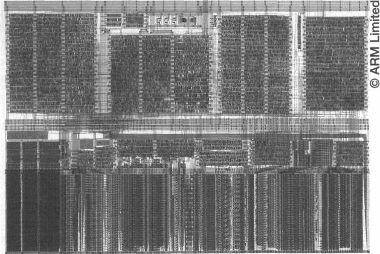
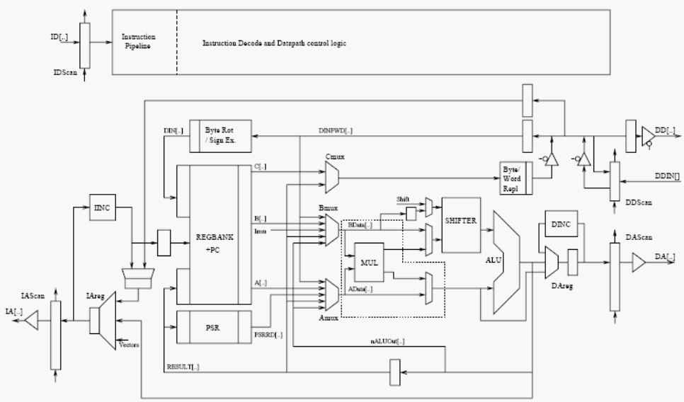
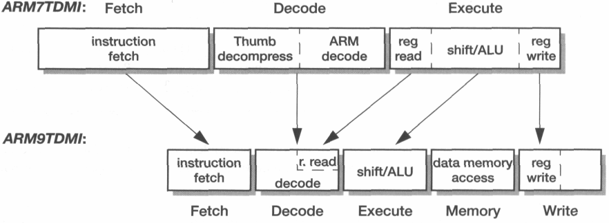

Your browser doesn't support the features required by impress.js, so you are presented with a simplified version of this presentation.
For the best experience please use the latest Chrome or Safari browser. Firefox 10 (to be released soon) will also handle it.

The ARM9TDMI processor core

The ARM9TDMI processor organization
Features of ARM9TDMI processor
- General purpose microprocessor belonging to v4T family of ARM processors
- Supports both 32 bit ARM and 16 bit Thumb instruction set
- Can operate in both Big-Endian and Little-Endian modes
- Supports coprocessors: Communicates through a simple handshake protocol
- Supports both bidirectional and unidirectional connection to external memory system
- Implements a 5-stage pipelining for both instruction and data interfaces

ARM7TDMI and ARM9TDMI pipeline comparison
Harvard Bus Architecture
Nature:
Uses separate instruction and data interfaces
Advantage:
Allows concurrent instruction and data accesses and
greatly reduces CPI of the processor
Coprocessor Support
ARM9TDMI supports on-chip co-processors
Applications:
- Floating point operations
- Digital signal processing
- Other special purpose hardware acceleration requirements
On-Chip Debug
The EmbeddedICE functionality gives the same system-level debug features as that on ARM7TDMI core with the following additional features:
- Support for Hardware single-stepping
- Breakpoints on exceptions
- Base Restored Data Abort Model
Base Restored Data Abort Model
Affects only a very small section of operating system code, the data abort handler
It does NOT affect the user code
When data abort exception occurs, base register is restored by the processor hardware to the value contained by the register before the occurence of the exception
Uses:Significantly simplifies the Software Data Abort Handler
Rationale in choosing ARM9TDMI over ARM7TDMI
- Usage of separate instruction and data memory ports instead of single unified memory
- Exploiting the higher clock-rate supported by ARM9's five-stage pipeline
Ways of handling Memory Requirements
- By incorporating separate data and instruction caches (Harvard Caches) and connecting them to a unified memory
- Using an appropriate amount of separate, directly-addressed local instruction and data memory instead of caches
Technical Details of ARM9TDMI
- Process Technology: 0.25 μ
- Metal Layers: 3
- Vdd: 2.5V
- Transistors: 111,000
- Core area: 2.1 mm2
- Clock: 0 - 200 MHz
- Power: 150 mW
ARM9E-S
A Synthesizable version of ARM9TDMI core
Features:
- Implements an extended version of ARM instruction set
- Supports full ARM architecture version v5TE, including Signal Processing Instruction Set Extensions
- 30% larger than ARM9TDMI on the same process technology
That will be all...
Thank you for bearing with me during this presentation :)
You can find the sources of this presentation @ github.com/shrikrishnaholla/ARM9TDMI-Presentation